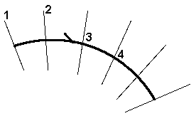
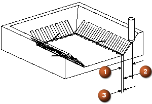
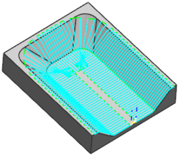

指定刀具直径百分比步距
步距允许您指定连续切削刀路之间的距离，步距是一个直线距离。根据使用的步距方法，在连续刀路(1—2)的最宽点测量，或者在边界交界处(3—4)测量。

-
在驱动设置组中，设置如下参数：
-
步进 = 平面平直百分比
-
平面直径百分比 = 20
-
材料侧的条带= 0.875
-
相反侧的条带 = 0.875
刀具平直百分比选项允许您按照刀具直径的有效百分比来定义步距，这个沿着边界来测量。
在边界平面中测量的加工区域总宽度，是这个工序的带宽，带宽(1)由另一侧的条带(2)以及材料侧的条带(3)偏置值来定义。

-
-
点击确定。
将打开固定轮廓铣对话框。
-
点击操作组中的生成
 。
。
注意拐角处的步距相距多长，您可能要通过指定最大步距值来控制它。